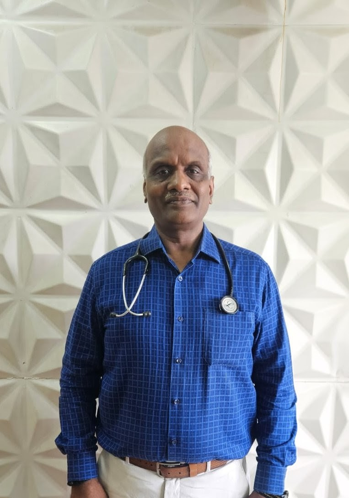
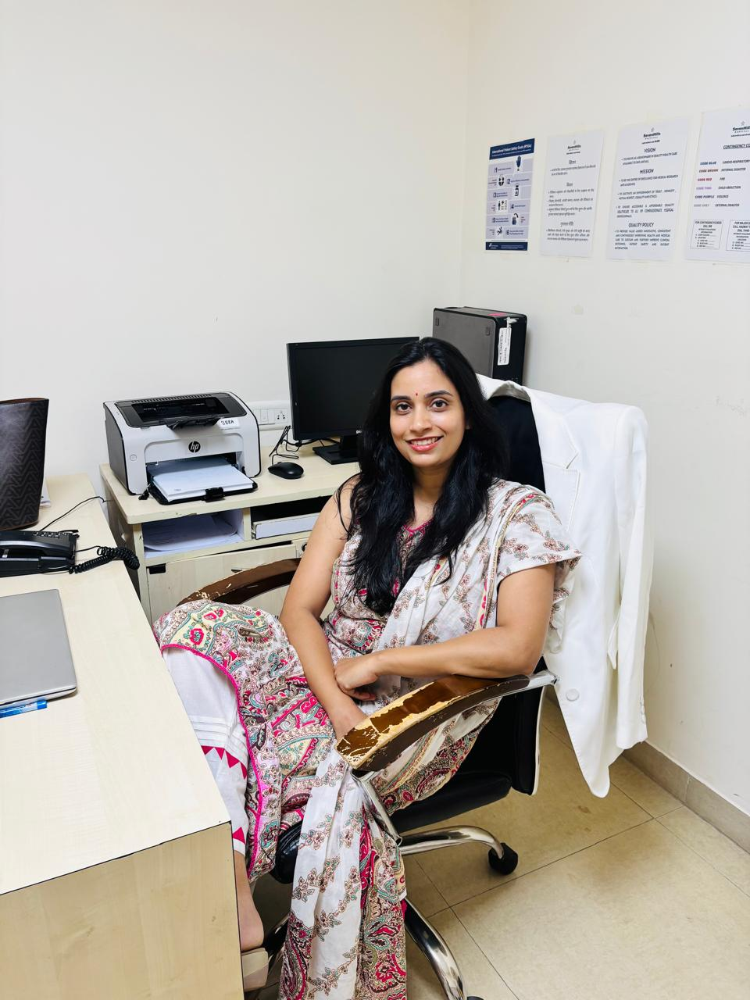

Expert specialists providing comprehensive healthcare across multiple medical disciplines

MBBS · DPharm · CCADM · CCRDOM · FICM · CEB · CCD
Fellowship in Critical Care Medicine — Apollo · COVID-19 Certified
A highly experienced Diabetologist & Critical Care Specialist with over 28 years of practice. Provides personalized, evidence-based diabetes care and expert critical care consultation including ICU management and emergency medical care.
Special Interest In
Thyroid & Hormonal Disorders · Obesity · Hypertension · Diabetes · Infectious Diseases
Critical Care Services
ICU Management · Emergency Medical Care · Pre & Post-Operative Critical Care · Second Opinion
PhD (Pursuing) · M.Phil in Clinical Psychology · M.A. Clinical Psychology
Registered with RCI · Member of IACP
A seasoned clinical psychologist who views therapy as a reflective process—helping clients gain clarity about their lives, relationships, and goals. She approaches each individual with the understanding that everyone is unique, tailoring her work to their specific needs while combining evidence-based techniques with empathy and care.
Therapeutic Approaches
CBT · DBT · Psychodynamic · Trauma-Informed · Mindfulness · Couples & Family Therapy
Manages
Depression · Anxiety · OCD · Anger · Stress · Women's Mental Health · Parenting · Sleep Issues
BHSc (Food & Nutrition) · PG Diploma in Applied Nutrition & Dietetics · Certified Diabetes Educator
Nirmala Niketan College · ICHMCTAN, Dadar
A passionate Clinical Nutritionist based in Mumbai with a proven track record of guiding 3,000+ patients across India and internationally. Works in close collaboration with endocrinologists, diabetologists, and gynecologists to deliver integrated, evidence-based nutrition care focused on root-cause healing.
Specialises In
Prediabetes & Insulin Resistance · Type 1 & Type 2 Diabetes · PCOS & Thyroid Disorders · Fertility & Infertility · Hormonal Imbalances
MBBS · MS General Surgery · MCh Plastic Surgery
Fellowship in Body Contouring (Spain) · Fellowship in Hair Restoration & Facial Aesthetics (Chennai)
A skilled Plastic & Cosmetic Surgeon with a philosophy of "A stitch in time saves nine" — focused on detailed consultations, science-backed advice, and no brand endorsements. Associated with leading hospitals across Mumbai including Criticare Asia, Andheri East.
Areas of Practice
Plastic & Reconstructive Surgery · Body Contouring · Hair Restoration · Facial Aesthetics · Cosmetic Procedures

MBBS · DNB General Surgery (Jaslok Hospital)
Trained at one of Mumbai's most prestigious surgical institutions
An experienced General Surgeon with specialized expertise in minimally invasive and advanced surgical procedures. With 9 years of hands-on surgical experience, she brings precision and care to every procedure.
Expert In
Laparoscopic Surgeries · Laser Proctology · Thyroid Surgery · Breast Surgery · Skin & Surface Level Surgeries
Consultant Orthopaedic Surgeon
Specialist in Arthroscopic & Joint Replacement Surgery
A trusted Consultant Orthopaedic Surgeon with over 17 years of experience. Known for patiently explaining conditions, treatment options, risks, and recovery timelines to patients, ensuring informed and confident decision-making.
Areas of Expertise
Arthroscopic Surgery · Joint Replacement · Knee & Hip Surgery · Sports Injuries · Bone & Joint Disorders · Fracture Management